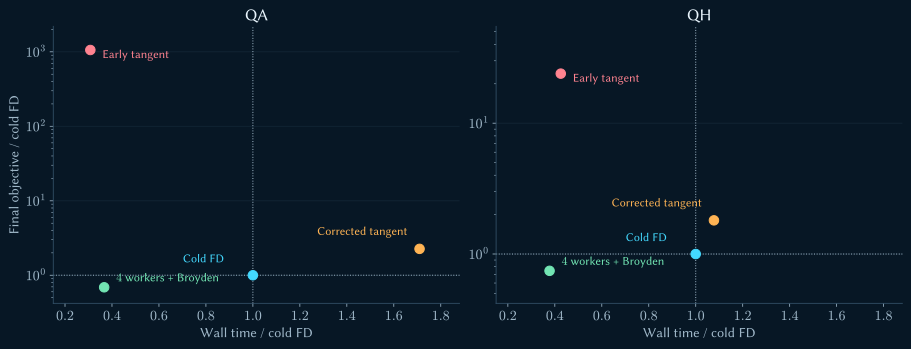
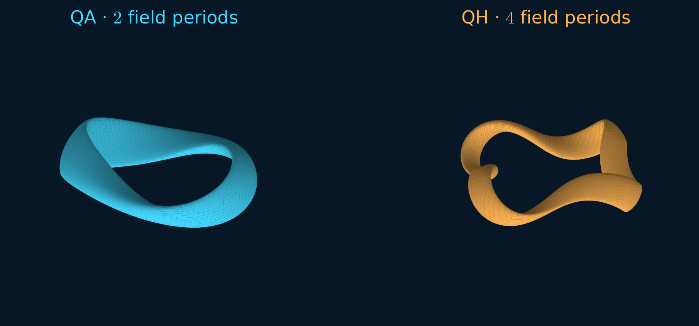
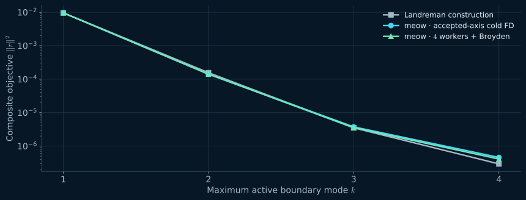
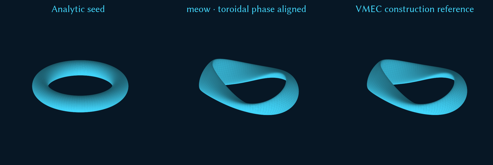
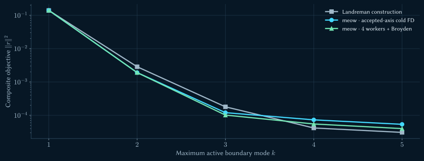
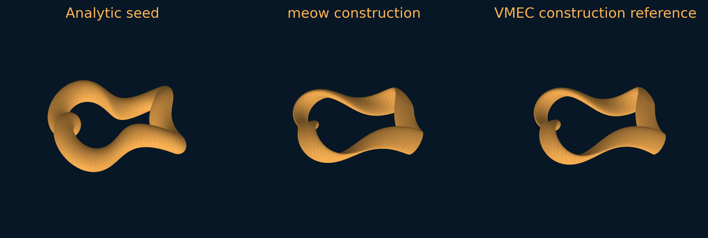
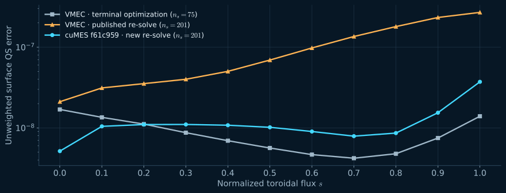
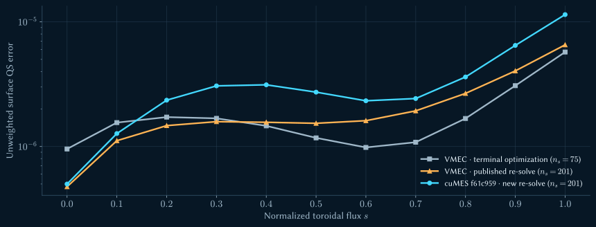
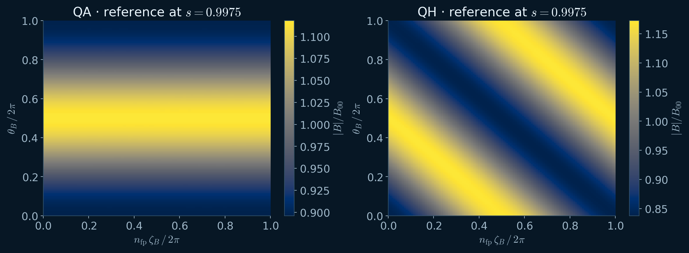
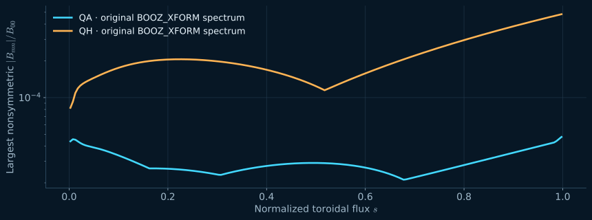

Dense optimization problem
boundary variables at QH mode
Orientation
From boundary coefficients
to a quasisymmetric equilibrium.
boundary variables at QH mode
QA / QH · four cold FD workers + Broyden
Orientation
Which work belongs to meow and which belongs to cuMES? How can an equilibrium tangent replace a nonlinear finite-difference solve?
Measure both execution time and the final objective.
Reconstruct QA and QH from analytic seeds. Check the published boundaries with an independent equilibrium solver.
Keep construction, final refinement, and high-resolution re-solves distinct.
Code & derivatives
meow selects absolute Fourier coefficients and a fixed accepted-axis predictor.
cuMES validates the fixed-boundary problem and solves its multigrid force balance on the GPU.
meow samples fields and profiles, then forms QS, aspect, and optional mean- residuals.
Use cold differences, retained equilibrium tangents, or a safeguarded secant update.
A dense local least-squares model proposes a boundary step within a trust region.
Evaluate the trial; update the radius, accepted axis, and saved input. Repeat.
Code & derivatives
| Maximum active mode | |||||
|---|---|---|---|---|---|
| Boundary variables: |
Stellarator symmetry retains and . At , keep only positive ; for , keep .
stays fixed at . Optimizer cutoff and the cuMES equilibrium basis are separate controls.
Code & derivatives
Form the dense scaled Hessian from . Solve the trust-region quadratic; the general library also handles bounds with Coleman–Li scaling and reflected steps.
Compare actual and predicted reduction. Good trials update the boundary and axis predictor; poor trials shrink the radius. , , and stop the run.
A small step satisfies . It does not certify a good QS objective or an accurate Jacobian.
Code & derivatives
Each column requires a perturbed, converged equilibrium and target evaluation. At mode : perturbations per full refresh, plus the cached center.
Retain the final-grid linearization. Solve a linear equilibrium response per boundary direction, then apply meow’s analytic target chain rule.
Code & derivatives
EquilibriumLinearization owns the converged force linearization and iterative solve session.
solve_boundary_tangent maps a BoundaryTangent to the spectral state response.
materialize_tangent publishes field/profile derivatives; meow applies QS and size JVPs.
| Current analytic selector | Policy at meow de1b324 |
|---|---|
| Linear solve | relative tolerance · absolute · restart · cap |
| Cold FD fallback | All boundary directions; failed or nonfinite tangent columns |
| Status | Experimental hybrid Jacobian; cold finite differences remain the default |
Code & derivatives
| Full QH construction · early experiment | Cold FD | Tangent |
|---|---|---|
| Accepted optimizer iterations | ||
| Equilibrium evaluations | ||
| Nonlinear equilibrium iterations | ||
| Tangent Jacobians | ||
| Tangent linear iterations |
fewer equilibrium evaluations and fewer nonlinear iterations. More optimizer steps and linear work remain.
Code & derivatives
| Case | FD → tangent wall | Raw speed | FD objective | Tangent objective | Objective ratio |
|---|---|---|---|---|---|
| QA | |||||
| QH |
QA and QH are raw wall-time ratios. Neither run qualifies as acceleration to the same optimization quality.
Code & derivatives
After the cuMES correction, QH objective directional derivatives differ by at most in the hybrid check.
But complete target-residual columns still differ by . The column gate is not met.
A good directional objective derivative can hide a different curvature model. Tightening GMRES to still leaves a worst column difference.
Code & derivatives
The dual inverse transform wrote constraint fields into buffers that the constraint operator did not read. Commit 8c61395 connects the views.
Commit f1a3ed7 initializes tangent de-aliasing scratch found by Compute Sanitizer.
| Centered Solovev restart oracle | Difference |
|---|---|
| Aggregate spectral state | |
| Published equilibrium fields |
The harder QH columns still fail the agreed target-column gate.
Code & derivatives
| Case | Cold FD () | Corrected () | Speed / FD | Final objective | Objective / FD |
|---|---|---|---|---|---|
| QA | |||||
| QH |
Corrected endpoints improve greatly, but QA takes the control time and QH takes . Both objectives remain worse.
Code & derivatives
An accepted step supplies a secant. Refresh from cold finite differences when the model becomes unreliable or the refresh interval is reached.
| Refresh interval | accepted steps |
|---|---|
| Minimum reduction ratio | |
| Maximum relative secant error |
Broyden uses already observed residual changes. It is separate from cuMES equilibrium-tangent information.
Code & derivatives
| Mode- Jacobian · columns | Serial | workers | workers | -worker matrix difference |
|---|---|---|---|---|
| QA | · bit-exact | |||
| QH | · bit-exact |
Each worker owns its solve and target evaluation. The center residual and accepted-axis predictor stay fixed across the batch.
Eight workers: a QA perturbation lost convergence. QH stayed exact but slowed from to in that separate diagnostic.
Code & derivatives
| Jacobian strategy | QA wall () | QH wall () | End result |
|---|---|---|---|
| Historical cold FD | Control objectives | ||
| Serial aggressive Broyden | Same endpoints as both parallel Broyden runs | ||
| workers + Broyden | Same equilibrium / nonlinear work as workers | ||
| workers + Broyden | QA · QH |
Four workers give QA / QH over two workers, with matching trajectories. Versus historical cold FD: , with improved objectives.
Code & derivatives

Landreman reproduction
Use the original targets and seeds.
Inspect the shapes, convergence history, and independently solved fields.
Landreman reproduction

· target aspect ratio
Symmetric Boozer harmonics have .
· target aspect ratio
Per-period helicity ; physical .
Landreman reproduction
| Comparison | Starting data | What it establishes |
|---|---|---|
| Analytic-seed construction | Runs 021 (QA) / 039 (QH) | meow can rediscover low-QS shapes through mode continuation |
| Final-refinement target oracle | Terminal optimization wouts · | The independent target evaluator matches saved SIMSOPT objectives |
| Published-boundary re-solve | configurations/new_QA / new_QH · | cuMES solves the published geometry; compare its fields and QS profile |
qa_analytic.json → construction. qa_start.json → final refinement. qa.json → published-boundary evaluation. QH uses the corresponding three inputs.
Landreman reproduction
is field strength. and are covariant flux functions; uses the archived flux/sign convention. Normalize the surface quadrature once.
Fourier-resample the cuMES fields and linearly interpolate half-grid quantities to the target surfaces. Boozer analysis comes afterward.
Landreman reproduction
| Setting | QA construction | QH construction | Final refinement |
|---|---|---|---|
| Aspect target | |||
| Mean- residual | Absent | Absent in both | |
| Surface weights | All | All | QA: · QH: |
| Target sampling | flux surfaces | , , …, | points / surface |
| FD relative / absolute step |
QS residuals. Append aspect for both cases and mean only for QA construction. Objective = QS + scalar residual squares.
Landreman reproduction
| Boundary cutoff | Variables | cuMES | QA | QH |
|---|---|---|---|---|
| Start | Start | |||
| Continue | Continue | |||
| Continue | Continue | |||
| Construction endpoint | Continue | |||
| Final refinement is separate | Construction endpoint |
Use the imported sequence for construction and a common equilibrium gate. Carry the accepted axis when adding modes.
Landreman reproduction
At exact axisymmetry the -D tangent cannot see first-order transform growth. The tangent path inserts a deterministic chiral seed of amplitude .
Reusing the refinement FD step left the QA objective at and mean near .
Construction steps plus accepted-axis tracking reach mode- objective ; the archive gives ≈.
Landreman reproduction

| Final construction objective | Landreman | meow cold FD | meow -worker Broyden |
|---|---|---|---|
| · same target definition | |||
| Ratio to Landreman |
Landreman reproduction

QA begins with an axisymmetric torus.
Landreman reproduction

| Final construction objective | Landreman | meow cold FD | meow -worker Broyden |
|---|---|---|---|
| · same target definition | |||
| Ratio to Landreman |
Landreman reproduction

QH begins with and .
Landreman reproduction
| Terminal VMEC output · new CPU evaluation | QA | QH |
|---|---|---|
| Composite objective | ||
| Weighted QS | ||
| Unweighted QS | ||
| VMEC final grid | · · | · · |
The independently evaluated terminal totals match the frozen SIMSOPT values to their printed precision. This verifies the target calculation on the same fields.
Landreman reproduction
| New GPU solve · 2026-09-08 | QA | QH |
|---|---|---|
| Final resolution | (, ) | (, ) |
| Total / final-stage iterations | ||
| Aspect ratio | ||
| Mean | ||
| Composite objective |
Landreman reproduction

| Composite objective | VMEC terminal · | VMEC published · | cuMES pinned · |
|---|---|---|---|
| QA |
Landreman reproduction

| Composite objective | VMEC terminal · | VMEC published · | cuMES pinned · |
|---|---|---|---|
| QH |
Landreman reproduction

Landreman reproduction

Reference maximum : QA · QH . These are spectral amplitudes, not the squared QS objective.
Reproduction & evidence
cmake -S ../meow -B ../tmp/meow-slides-build \
-DMEOW_BUILD_CUMES_INTEGRATION=ON \
-DMEOW_FETCH_CUMES=ON \
-DCMAKE_BUILD_TYPE=Release
cmake --build ../tmp/meow-slides-build -j 6../tmp/meow-slides-build/cumes_landreman_optimize \
--dry-run \
slides/meow/data/inputs/qa-four-worker.rundown.jsonRemove --dry-run to optimize; QH has its own rundown. The JSON explicitly sets workers=4, refresh_interval=8, and the safeguards.
Reproduction & evidence
cuMES supplies a reusable equilibrium response; meow owns the target and Jacobian chain rule.
Tangents reduce nonlinear work, but corrected full runs have no qualified speedup. Four-worker Broyden delivers the measured fast constructions.
Analytic-seed constructions reach the archived objective scale and recover similar QA/QH shapes.
The target oracle matches the original totals. Published-boundary cuMES solves converge, with documented differences in their radial QS profiles.
Press N or Esc to close.
→ next slide / fragment
← previous slide / fragment
O overview
N speaker notes
F fullscreen
? this help
Home first slide
End last slide
Swipe horizontally on touch devices. Print from the browser to export a 16:9 PDF. Press Esc to close.